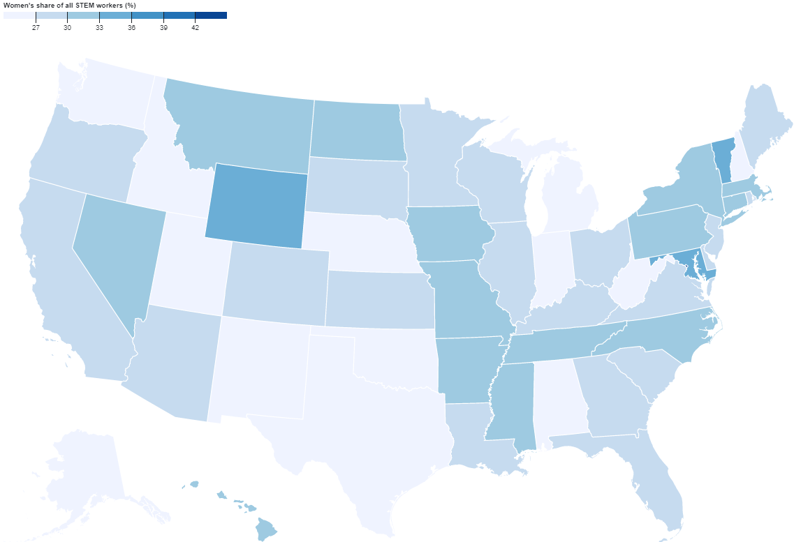
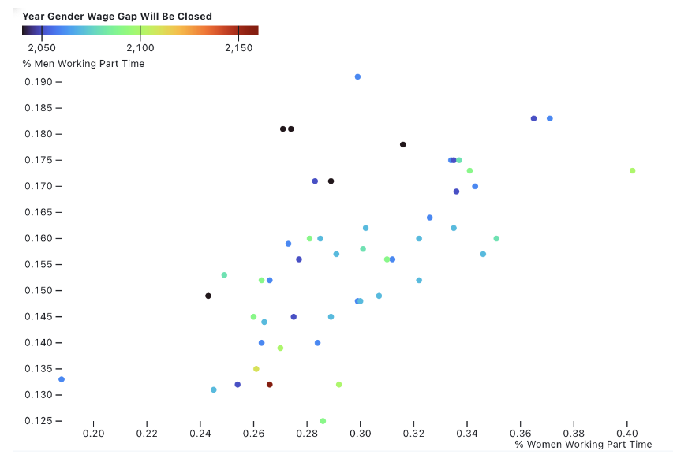

Gender Analysis
Both around the world and in the United States, women have made incredible steps towards equity in the workplace in the past century. However, inequality between men and women remains persistent, with factors such as education, familial expectations and ingrained sexism in society prohibiting women from achieving full equality. The goal of our project is to display existing inequalities to make them clearer, both in the United States and around the world.
The following world map shows the 16+ year-old labor force participation female to male ratio in the year 2021. Overall, women still has less labor participation than men in all most every country. Female labor participation rate is over 50% and male labor participation rate is over 65%. Women's participation is lowest in the Middle East countries, such as Iraq, Iran, etc, with only 10% - 20% participation rate. Women are discouraged from working due to culture and religion reasons in such area.
On the contrary, women's participation is relatively high in the poorest and most well-developed countries. In agriculture dominant country, women are more likely to participate in small-holder agricultural work [1], so the labor participation rate is relatively high. In developed countries, women have more opportunities and are more encouraged to pursue the same work opportunities as men, but men still lead by around 10% participation.
2021 Labor Force Participation Rate by Gender (Female/Male)
According to the National Science Foundation, women are greatly underrepresented in the workforce and only make up 29% of the science and engineering labor force. However, over the past fifty years, women have increasingly participated in the workforce leading to the breakdown of gender roles and the positive evolution of society. The gender gap in STEM is not due to differences in education but the masculine attitudes and cultures that exist in workplaces. Research has shown that external factors like cultures excluding women, persistent stereotypes, and a lack of role models reinforce gender inequities in STEM. Male-dominated culture incorporates unconscious biases such as gender stereotypes with STEM fields being viewed as masculine. These cultures are not supportive of women and minorities. This also results in fewer role models due to limited examples of female scientists and engineers. Additionally, hiring algorithms and automated resume scanners use large datasets that don't equally represent women or minorities. For example, search algorithms show higher paying jobs to men because the underlying data tells the tools that men earn more. If more women enter STEM professions, greater gender equality in society and income are inevitable since these occupations generally have higher wages. An increase in annual fiscal income may improve the socioeconomic status of women globally. Advancements in technology have stimulated the economy by progressing the STEM field and encouraging innovative ideas. Women should have equal access to opportunities in order to ensure individual success and increase background experience. Encouraging women to pursue STEM careers will create a more inclusive workforce.

The pay gap between men and women continues to plague our nation. Despite having the same skills and putting in the same amount of effort, the work done by women is seen as less valuable and more dispensable. As a result, women are being paid less than their male counterparts across different Jobs, Industries and Education levels. On average, women earn 83% of what men earn. Lesser pay throughout their life leads to lesser retirement savings and decreased financial independence which triggers a series of other societal issues.
Across all major industries such as Administration, Engineering and Sales, women are paid significantly lesser than men. More specifically, there are some jobs such as Data Scientist and Graphic Designer where women are paid marginally more than men. However, in more male dominated jobs such as Software Engineer and IT, men tend to paid much more than women.
Not only that, unfortunately, women who have earned PHDs earn lesser than men with undergraduate or masters degrees! Thus, the wage gap cannot be explained by the difference in the education of workers. These are stark facts that need to be acted upon with urgency, as at this rate it will take us 90 years to close the wage gap, and we cannot afford to wait this long. Women not only need to be motivated to enter male dominated fields, but also be paid well and equally to ensure gender equity.
This scatter plot first shows a state-by-state comparison of the percentages of men and women who work part-time. Part-time work is fewer than 35 hours a week, and is often chosen by people who have other responsibilities such as childcare. At the same time, this work comes with minimal benefits or promotions when compared to full-time work such as regular raises, health insurance and paid time off. The plot shows that in every state, a much lower percentage of men than women work part time, perpetuating existing inequalities and stereotypes about women being primary homemakers and caretakers of the family. The color of the scatterplot points is representative of the expected year in which the wage gap closing slightly sooner (closer to 2050 than 2100) when the percentage of women working part time is lower, or when the percentages of men and women working part time is equal.
References
[1] https://genderdata.worldbank.org/data-stories/flfp-data-story/#:~:text=Women%20are%20less%20likely%20to,compared%20to%2080%25%20for%20men.